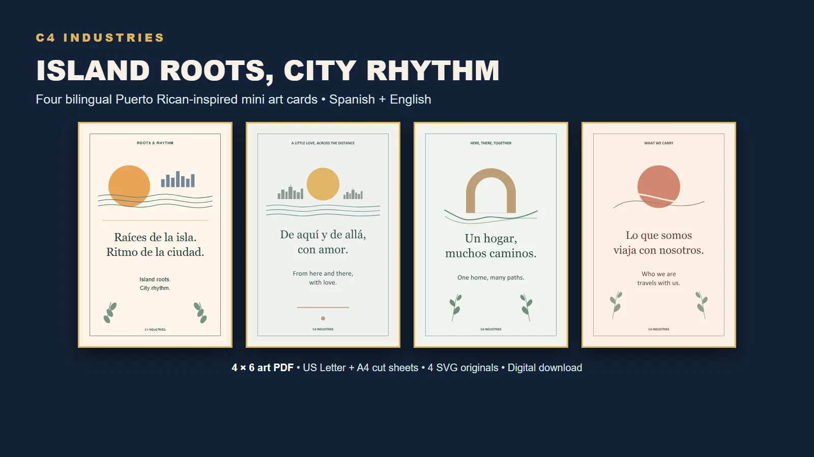
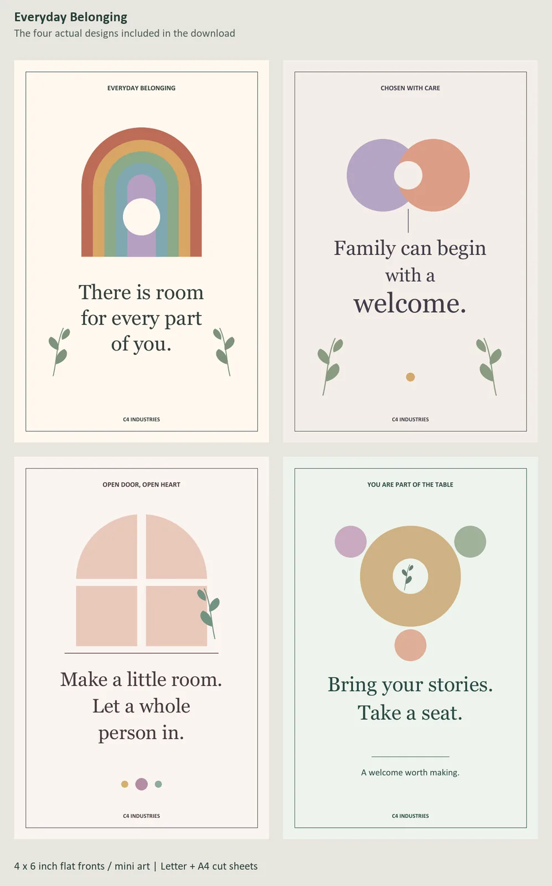
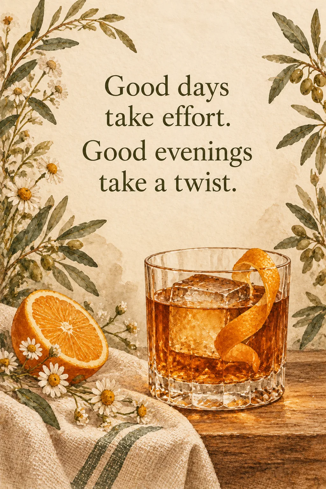

LIVE · $5
Island Roots, City Rhythm
Four bilingual mini art cards rooted in Puerto Rican identity and New York energy.
View live product ↗ROOTS / COLOR / ATMOSPHERE
Some pieces are quiet. Some are loud. The common thread is that they come from C4's own visual language instead of another generic trend template.
LIVE COLLECTIONS
The products below are already live. The images are the actual storefront previews, not regenerated approximations.

LIVE · $5
Four bilingual mini art cards rooted in Puerto Rican identity and New York energy.
View live product ↗
LIVE · $5
Four small welcome designs made for homes and spaces that should feel open to everybody.
View live product ↗
LIVE · $12
Seven motivational mini prints for coffee corners, desks and the small pauses built into a day.
View live product ↗C4 VISUAL STUDIES
These are original studio studies, not automatically products. They let C4 explore a visual direction before turning it into inventory.


THE ART DIRECTION
C4's art lane is deliberately broad, but not random. It circles roots, everyday rituals, aviation, memory, playful characters and creator culture.
Puerto Rican and New York influence where it belongs naturally.
Coffee corners, workspaces and small objects that make a room feel lived in.
Character and game-world studies that can grow into future C4-owned IP.